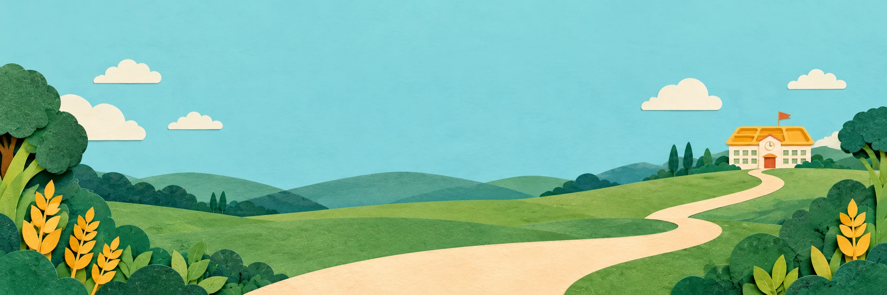
Первый экран
2172 × 724 · непрозрачный фон
Выбранный подробный стиль с небольшим увеличением отступов. Фоны, прозрачные иллюстрации и декор собраны отдельно от текста и интерфейса.
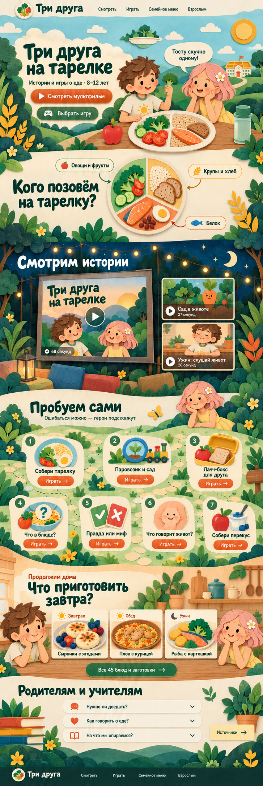

2172 × 724 · непрозрачный фон
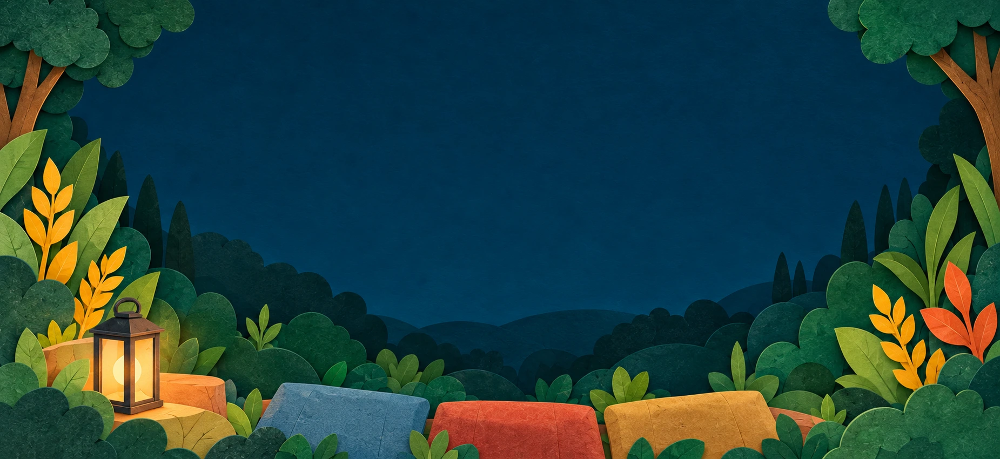
1851 × 850 · непрозрачный фон
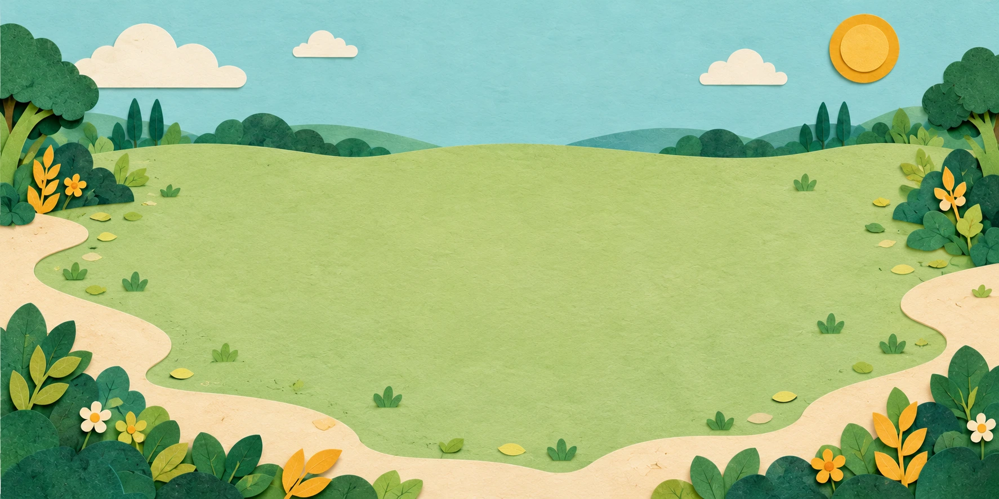
1774 × 887 · непрозрачный фон
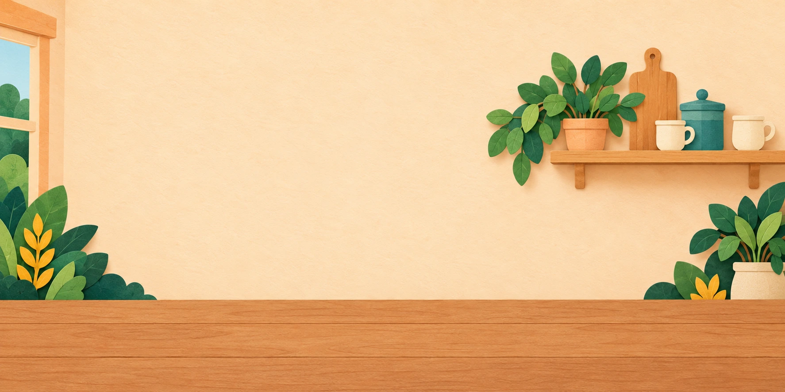
1774 × 887 · непрозрачный фон
Фон просмотра позволяет проверить края прозрачных изображений.
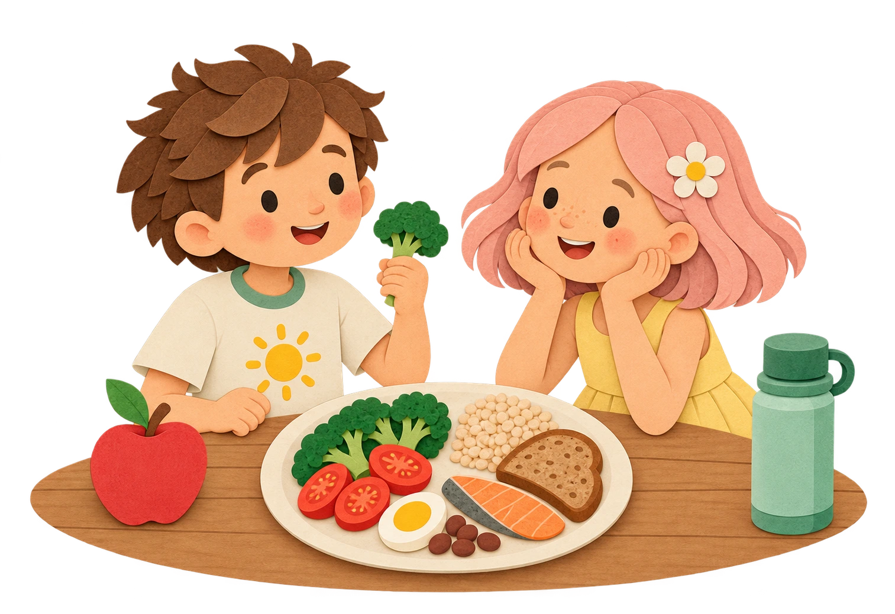
1513 × 1039 · альфа-канал
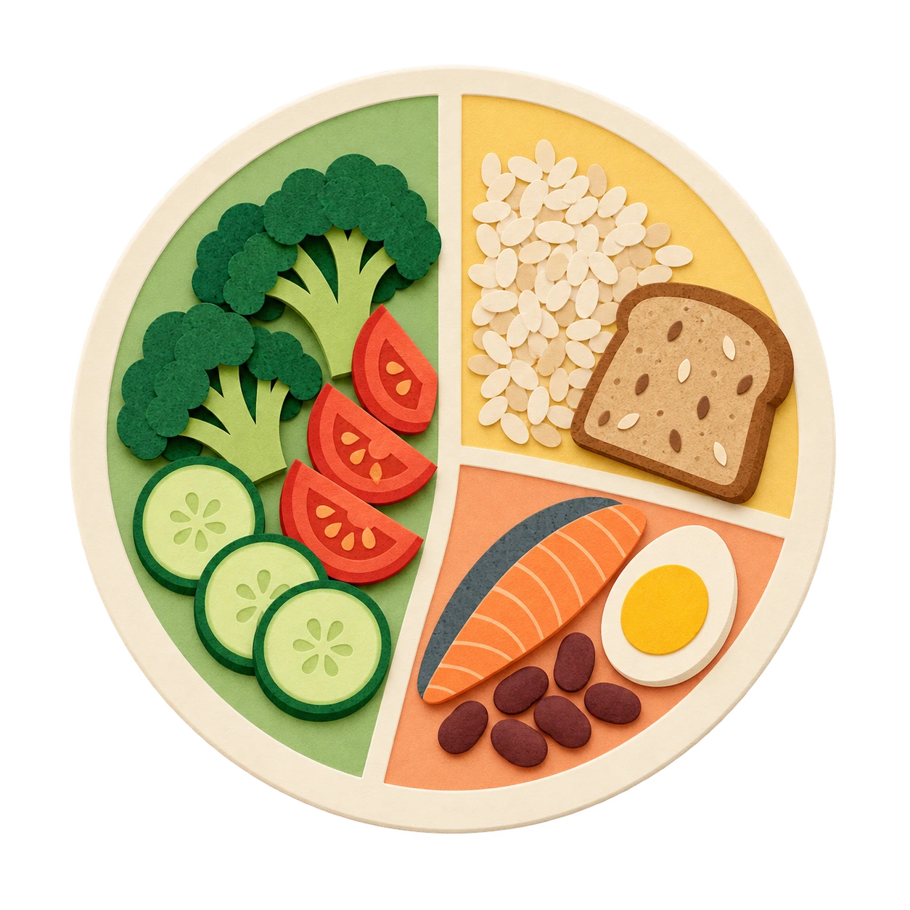
1254 × 1254 · альфа-канал

1254 × 1254 · альфа-канал
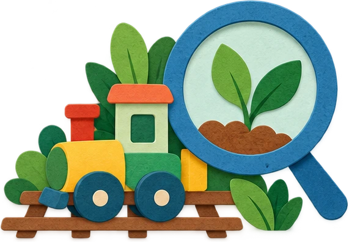
571 × 396 · альфа-канал
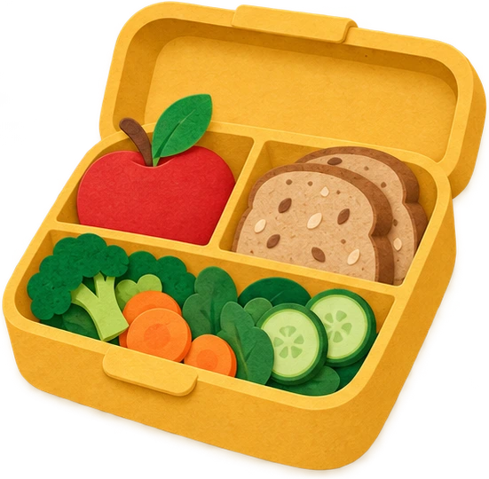
551 × 540 · альфа-канал
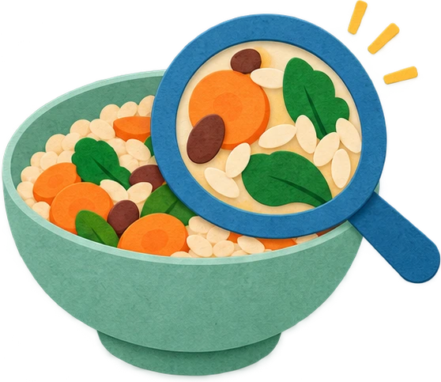
558 × 483 · альфа-канал
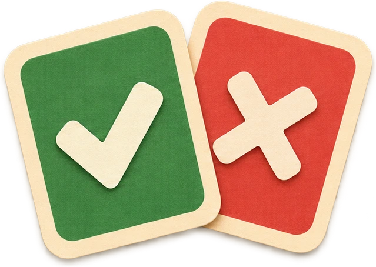
639 × 454 · альфа-канал
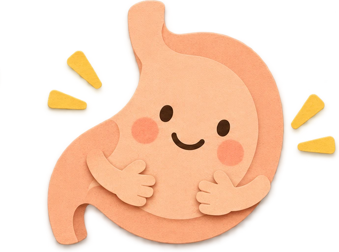
690 × 513 · альфа-канал
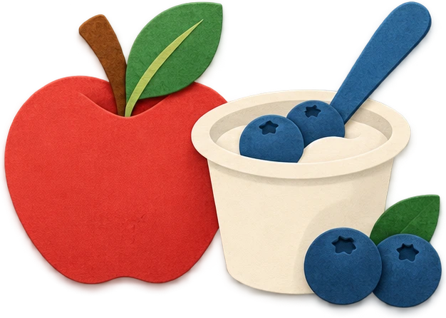
626 × 446 · альфа-канал
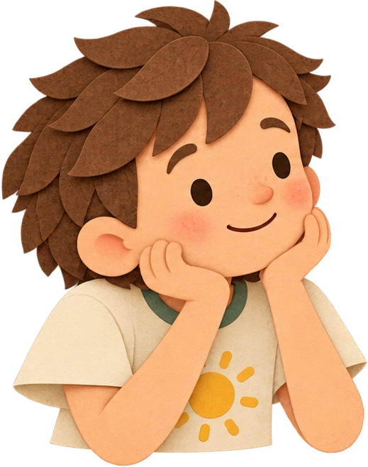
519 × 658 · альфа-канал
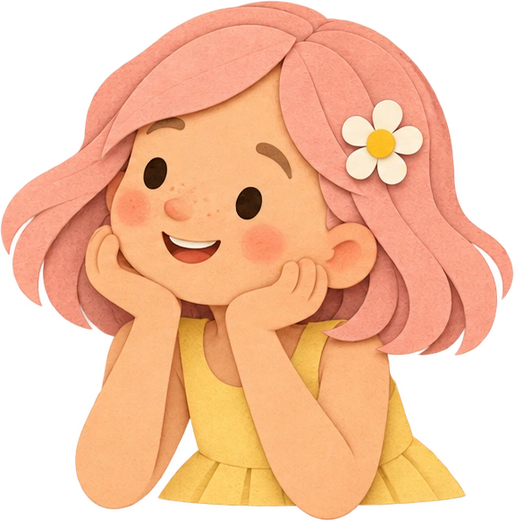
576 × 583 · альфа-канал
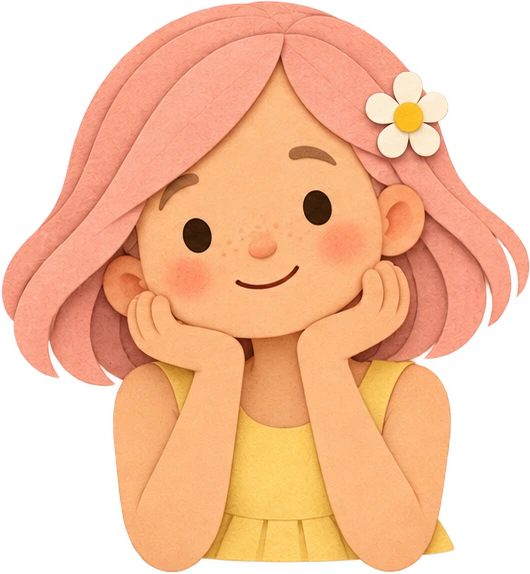
530 × 574 · альфа-канал
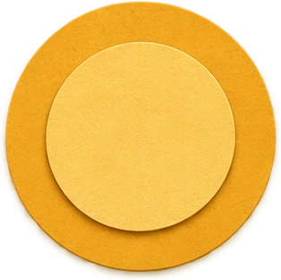
314 × 312 · альфа-канал
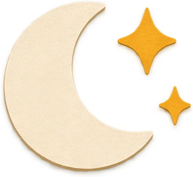
326 × 299 · альфа-канал
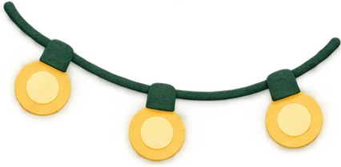
426 × 209 · альфа-канал
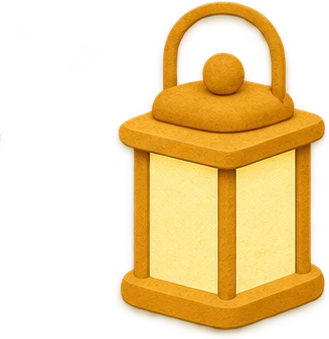
329 × 339 · альфа-канал
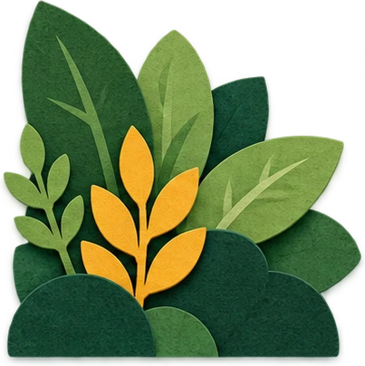
403 × 404 · альфа-канал
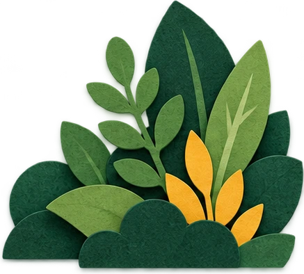
437 × 394 · альфа-канал
433 × 396 · альфа-канал
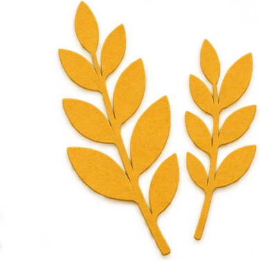
375 × 377 · альфа-канал
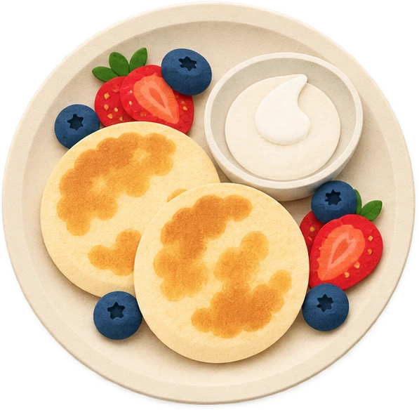
597 × 584 · альфа-канал
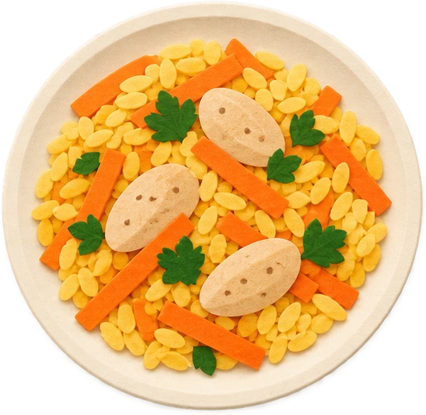
601 × 585 · альфа-канал
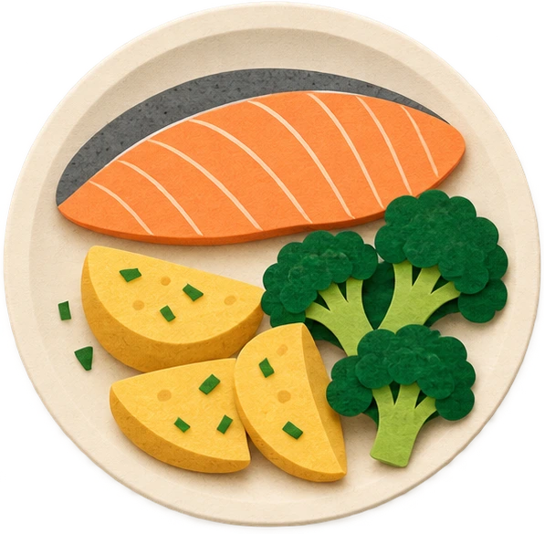
596 × 585 · альфа-канал